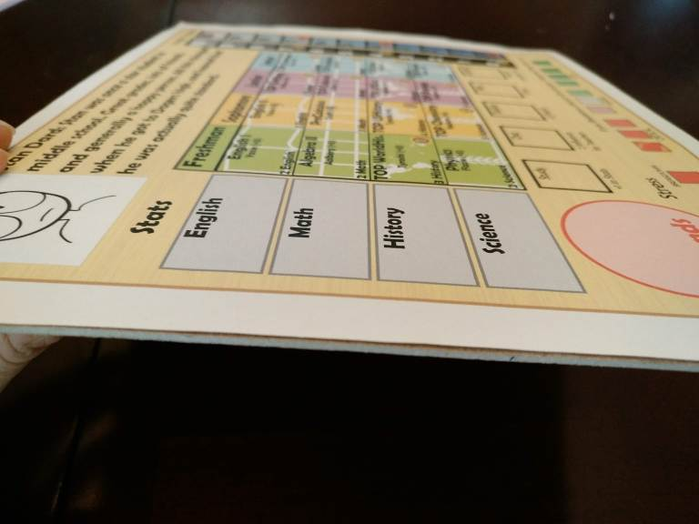
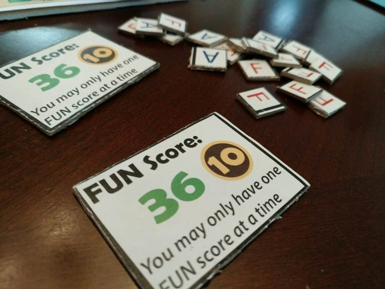
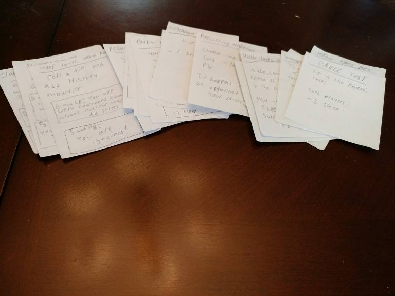
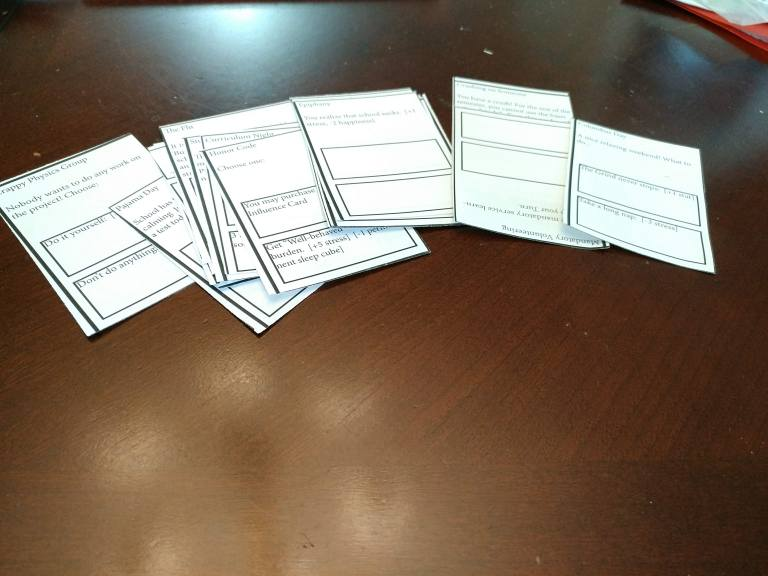
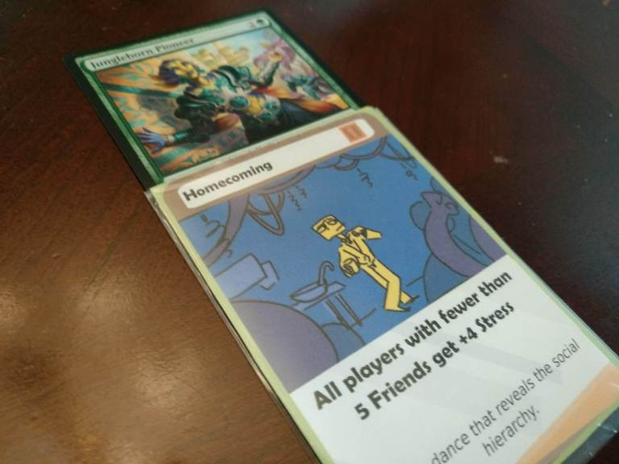
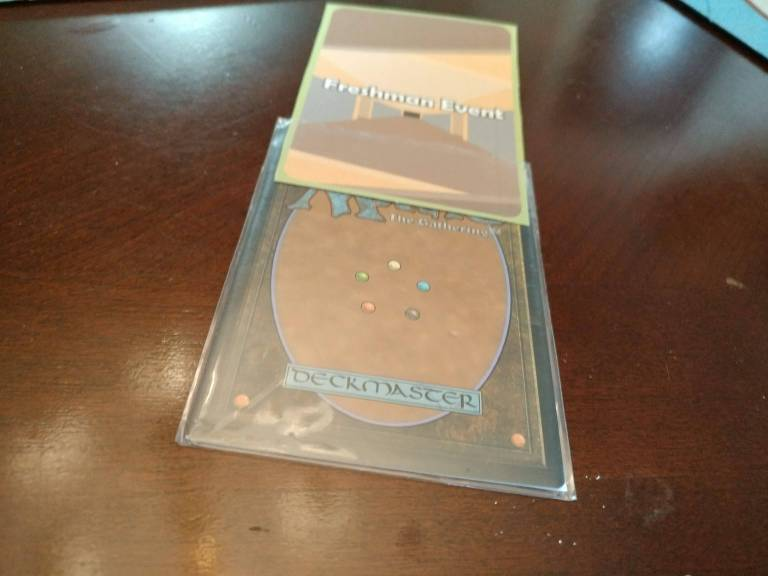

Personal website
August 14, 2018
When prototyping games, you can honestly not go wrong with pieces of paper and a pencil. However, I’ve found that there are a couple of items you can get off of amazon that make the process a lot easier. By using them, the game components will last longer and be harder to lose or destroy. Especially with more complex games where it is usually not very apparent to see what the problems are, it is helpful to have components that will last through many playtests.
Chipboard is compressed cardboard. Like the name implies, I use it most often for making chips (such as the A/F grade chips, or FUN chips) but also for a back for player boards. While paper can work, it often times gets lost or easily bent because it isn’t thick enough. Before chipboard, I had a lot of issues with the player board being too easy to bump and thus send all the components flying everywhere. Another advantage is the fact that it is not see-through, meaning that you can actually make high quality chips that hold secret information. What I usually do is print out what I want on a chip, and then glue it onto the chipboard before cutting it out.
 Before discovering chipboard, I had some success using cardboard: which works, but I feel that chipboard is superior in durability and how easy it is to cut out/use. Aesthetics are less important with prototype games, but components made from chipboard just feel nicer. Buying a pack is not a bad idea since it is pretty cheap and comes in packs of 25, which will probably last you a very long time.
Ok, so if you want to take things up a notch from slips of paper like this:
 Consider getting clear sleeves and cards of some kind so that you can slip in the paper into the sleeve like so:
 This way, you can also print out your own card backs and slip them into the other side of the card. It really helps with making the cards last longer and helps with shuffling, so I’d consider getting them for a high quality prototype without having to actually do a print run.
These cards are nice because you can write directly onto them, and they are then ready to shuffle and play with. I would recommend them if you are looking to quickly draft a game that requires a lot of card shuffling or cards that can’t be seen through.
That’s about it. For the rest of the components I need I usually get them 3D printed or 2D printed. What do you use to prototype? Let me know in the comments below! Thanks for reading, and make sure to subscribe if you enjoy this content!